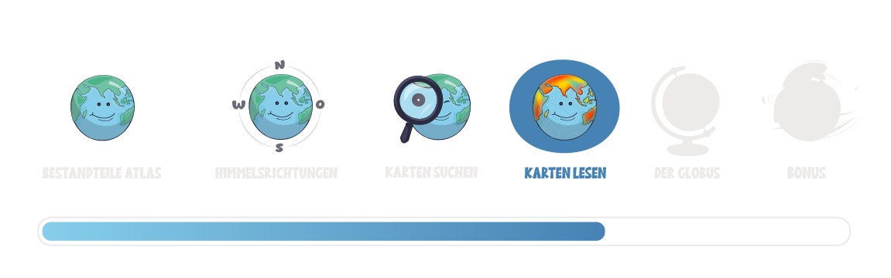

Lagebeschreibung
Eine Lagebeschreibung hilft dir, die genaue Position eines Ortes oder einer Region zu verstehen und zu beschreiben.
Warum das wichtig ist, erfährst du unten.
🎧 Bonus
Noch mehr gute Gründe, warum die Lagebeschreibung so wichtig ist, kannst du dir hier anhören:
Um die Lage eines Ortes zu beschreiben, gehe vom Großen ins Kleine. Dafür kannst du die folgenden Bezugspunkte nutzen:
|
01. Erdhalbkugel (Hemisphäre): Nenne zunächst die Halbkugel auf der sich der Ort befindet. |
|
|
02. Kontinent und Land: Das sind die größten geografischen Bezugspunkte. |
|
|
03. Himmelsrichtungen: Nutze die Himmelsrichtungen, um die Lage noch genauer zu beschreiben. |
|
| 04. Region oder Bundesland: Um noch konkreter zu werden, kannst du die Region oder das Bundesland beschreiben. Zum Beispiel: Magdeburg liegt im Bundesland Sachsen-Anhalt. | |
|
05. Nachbarorte: Nenne andere geographische Objekte, die in der Nähe liegen. |
|
|
06. Geographische Merkmale: Nenne geografische Merkmale wie Flüsse, Berge oder Seen, die sich in der Nähe befinden. Zum Beispiel: Durch Magdeburg fließt die Elbe. |
Beschreibe die Lage von Magdeburg, indem du die Lücken ausfüllst.
